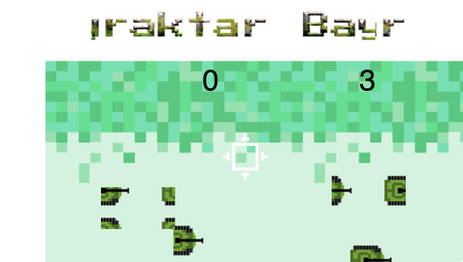
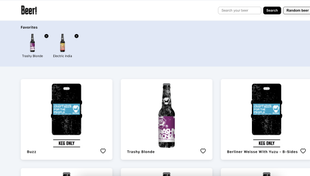

Nataly Grin,
Front-end developer
About me
My curiosity is the main force of my career, because I'm always ready to learn and try to keep in touch with all modern trends and practices. I enjoy analytical work, looking for new opportunities and providing simple yet effective solutions to tasks. I follow my passion for coding and I'm excited about creating digital products.In my free time I enjoy sports: billiards, bouldering and tennis.
Current stack
- Javascript (ES6)
- MongoDB
- Express
- React
- NodeJS
- HTML & CSS
Projects

 Digitutor
Digitutor
It’s an online platform designed to help students learn and improve their skills. The platform includes a variety of tutors on topics such as History, Math, Biology. I utilized MongoDB to save user data. I also integrated Cloudinary to save profile pictures for users.

Bayraktar
A web-based game developed using the p5.js library. In the game, tanks move through the screen, and the player controls a scope to heat them up. The player can earn points for each tank they hit.

Beer-app
A web application that allows users to search and discover different kinds of beers. It uses an API to fetch data and display information about each beer, such as its name, type, and alcohol content.

Dopomogo
The mission at Dopomogo is to help Ukrainians abroad. We work hard to preserve our national identity, remember who we are, where we are from, and create an atmosphere of sympathy and mutual assistance.
 Email me
Email me Book a call
Book a call